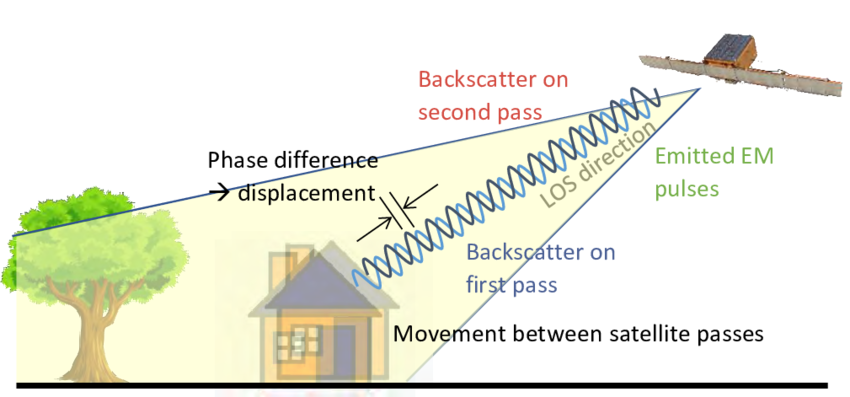
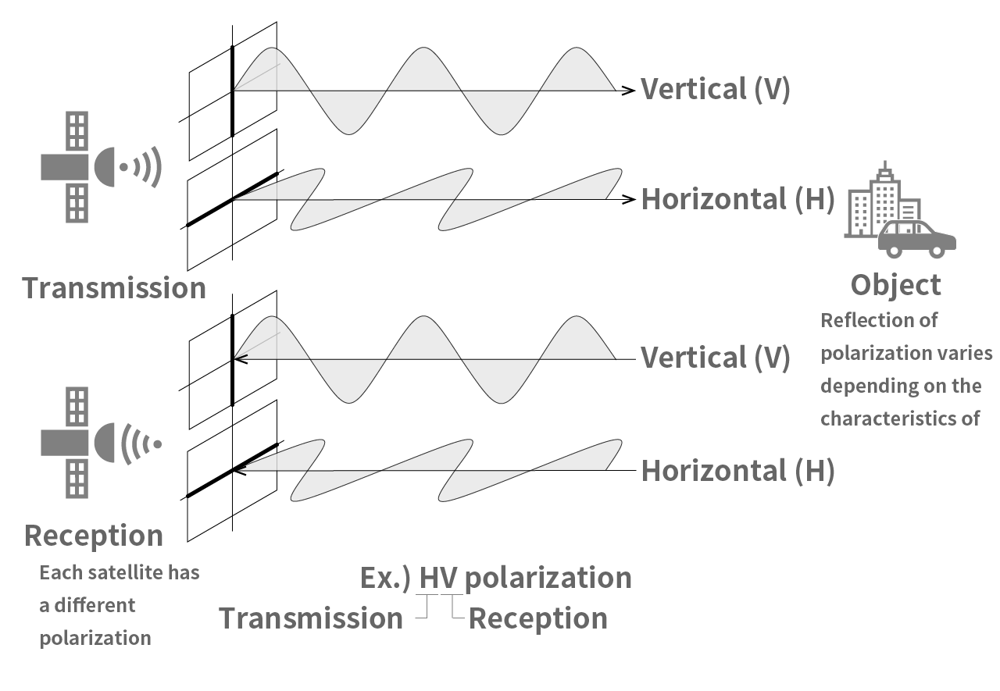
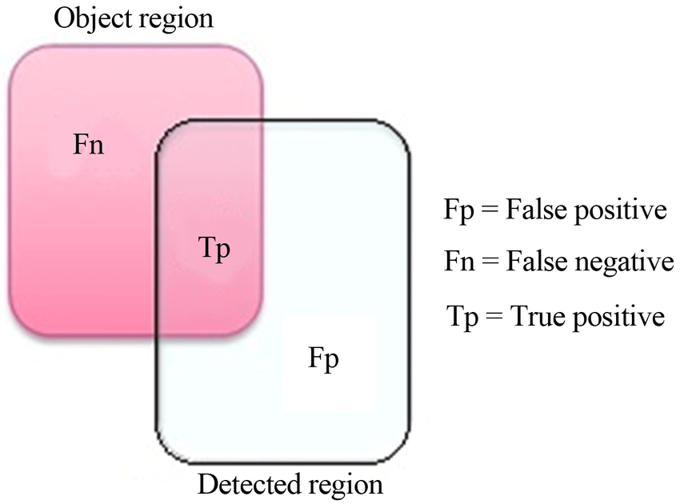
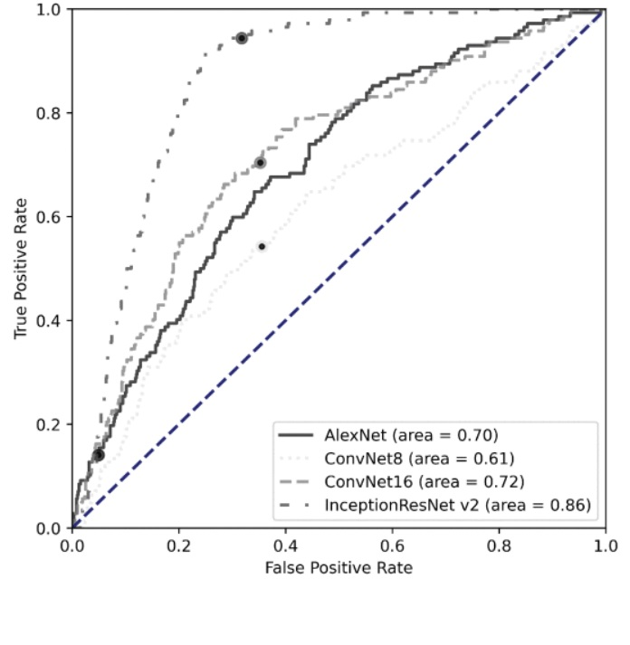

10 WeekEight: Temperature
10.1 Summary
10.1.1 SAR fundamentals
Synthetic Aperture Radar called as SAR are active sensors that can see through weather and clouds and sense surface texture. Its applications vary as per the wavelengths. SAR technology records the backscattered signal when it emits electromagnetic signals to generate images and its data. SAR is appreciated for higher resolution imagery which is because its radar emits signals while moving forward creating a longer antenna aperture in the azimuth direction. While moving it takes multiple images pixels while sweeping the footprint or swath. The advantage of such movement gets compensated by combining the received signals to synthesize a longer antenna aperture.
Orientation of the electromagnetic wave as transmitted by the radar refers to SAR polarization have a single polarization that emits and receives either horizontal (H) or vertical (V) polarization signals as well as dual one can transmits and receives bot both polarizations (HH and VV). Similarly, varying surfaces respond differently to polarizations such as rough surfaces can be sensed as VV polarization, volume scattering surfaces to cross-polarizations (VH or HV), and double bounce surfaces to HH polarization can be done because SAR signals have amplitude (backscatter) and phase difference data. An interferometric SAR (InSAR) uses phase data in order to detect ground movement, with changes in phase indicating surface displacement and its multiple images are used in surface topography or motion. Additionally, DInSAR (differential InSAR) allows elimination of natural elevation on phase shift for accurate detection of surface movement etc.
Figure-1: SAR Movement (backscattering and phase difference)
(Perdikou and Kouhartsiouk 2022)
Figure-2: Polarisation

(“This is the forefront of the SAR image! Viewing images taken by ICEYE on Tellus!” n.d.)
10.1.2 Change detection with SAR
To detect change via SAR data, brings multiple techniques suitable for readily statistical application on its imagery. In addition, its advantage of calibration errors make it fit for methods such as ratio images, improved ratio images, log ratio images etc. rather than simple methods as in case of optical data. Statistical tests such as standard deviation over time, with higher standard deviation indicating change can assess pixel wise change. Similarly, image collections analysis can deliver the change detection. The Receiver Operating Characteristic (AUC-ROC) curves may change detection accuracy via changing threshold classification. This can be done by maximizing true positives vs minimizing false positives.
SAR data can be fused with optical imagery at decision level fusion, object level fusion, and image fusion known as Image fusion technique. In decision level fusion SAR and optical bands are combined in different layers to classify the combined data whereas with object level fusion, the SAR and optical data derive new pixel values to detect change. Thus, are robust methods for change detection accuracy.
Figure-3: Accuracy (True-Positive, True-Negative, False-Positive, False-Negative)

10.2 Application
Many researchers exist on the temporal interferometric synthetic aperture radar (InSAR). (Pelich et al. 2022) emphasised that most research exists on single co-polarization images for flood water studies in order to identify with the double-bounce feature. However, their study added the cross-polarization imaging to enhance the mapping of urban flood water through multi-temporal InSAR coherence. Thus, in applying cross-polarisation, their study methodology brought an accuracy increase in maps of urban flood from 75.2% by using 82.9 %.
Whereas in the landslide susceptibility research of (Beker et al. 2023) the accuracy could be bettered further with highest precision of AUC value of 98.4%. Moreover, their study shows excellent statistics such as the 93.7 % of ACC value, 87.4% of a KAPPA value and 87.5% of the MCC value. Their model performance evaluations were developed using area under the curve (AUC), accuracy (ACC), kappa coefficient (KAPPA), and the Matthews correlation coefficient (MCC). In addition, they got high resultant when compared to CNN-support vector machine (CNN-SVM), CNN-random forest (CNN-RF), and CNN-logistic regression (CNN-LR).
In another disaster study of volcanic events, InSAR has been extensively used by Beker, T. et al. with five year data stacks by training the models on a synthetic training set using the confusion matrix. Artificial intelligence (AI) analyses improved the model where false-positive (figure-4) detections aided to link slope processes and salt lake deformations patterns to Gradient-weighted Class Activation Mapping (Grad-CAM). Additionally, model betterment via hybrid synthetic-real data gave more performance extraction using low-pass spatial filtering (LSF) with the real test set. Later, hidden feature visualisation by t-distributed stochastic neighbor embedding (t-SNE) provided lacuna of FT set. Thus, it brought the problem of elevation parameters. Detection included small volcanic deformations with all the others varying from 5 mm/year to 9.9-17.5 mm/year. were done in.
Figure-4: Comparison of the ROCs on the real test set of models using the FT approach. InceptionResNet v2 architecture demonstrates significantly better performance in comparison to other tested models.

10.3 Reflection
Synthetic Aperture Radar (SAR) operates as an active sensor, emitting electromagnetic signals and recording the amplitude (backscatter) and phase data. Key considerations in SAR data interpretation include polarization, which affects how surfaces respond to the radar signal, and permittivity, indicating the reflective properties of materials. The wavelength (or band) of SAR signals influences the type of information captured. In Google Earth Engine (GEE), SAR data typically comprises amplitude (backscatter) information, lacking phase data. SAR data in GEE is presented in three units: power scale (RAW SAR) for statistical analysis, amplitude for visualization purposes, and decibel (dB) scale for detecting differences, which is the default scale in GEE.
It is interesting to know that in GEE, only amplitude (backscatter) data is available but to use phase data we need to use SNAP (not considered here), one need to understand that What are we trying to detect, roughness or volume of a material such as polarization, type of material and part of earth (e.g. water).